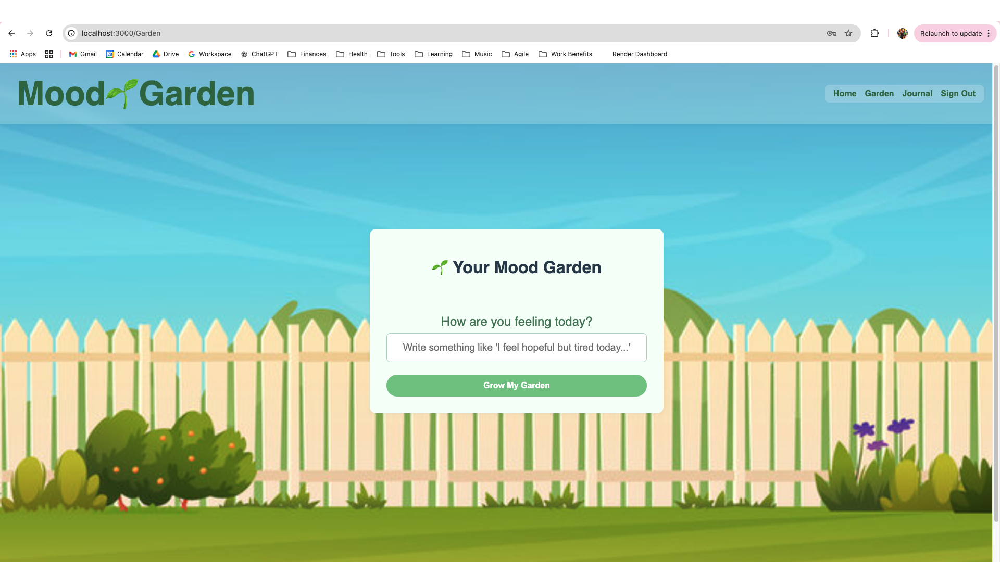
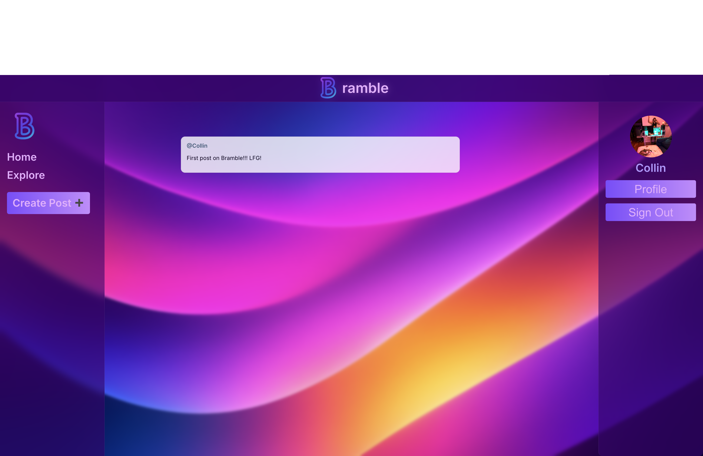
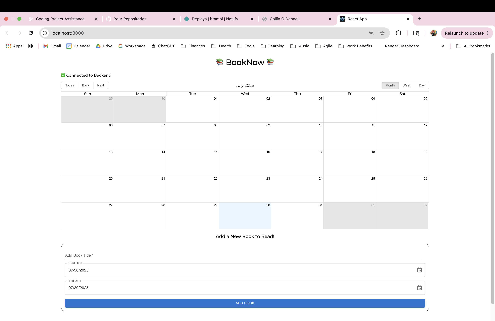

Software Engineering Portfolio

Mood Garden
A creative journaling app where users input their mood and their personal garden grows...
View on GitHub Live Demo

Bramble
A simple social media app where users can create profiles, follow friends, and post...
View on GitHub Live Demo
Jammmin
A music player where users search Spotify songs and build playlists via API.
View on GitHub Live Demo

BookNow
A calendar for readers to schedule books and track their reading plans.
View on GitHub Live Demo